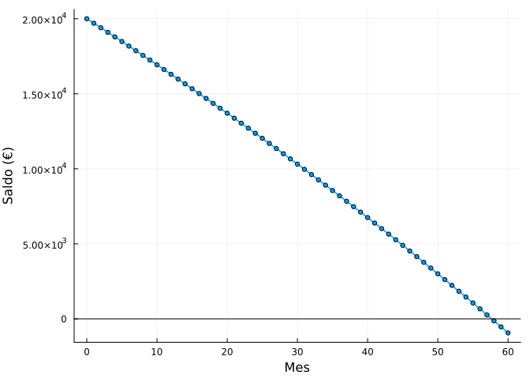
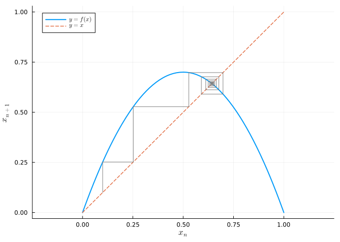
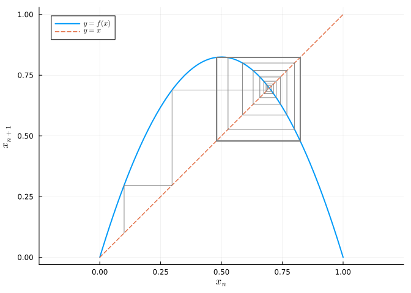

6 Iniciación al estudio de sistemas dinámicos discretos
Un sistema dinámico discreto viene dado por una ecuación en diferencias
\[ x_{n+1} = f(x_n), \]
que genera la órbita \(x_0, x_1 = f(x_0), x_2 = f(x_1),\dots\) Los puntos fijos son las soluciones de \(f(x^*) = x^*\); un punto fijo es estable si \(|f'(x^*)| < 1\) e inestable si \(|f'(x^*)| > 1\). Estos sistemas presentan una fenomenología muy rica —duplicaciones de periodo y caos— aun con reglas \(f\) sencillas.
6.1 Ejercicios resueltos
Para la realización de esta práctica se requieren los siguientes paquetes:
using SymPyPythonCall # Cálculo simbólico de puntos fijos.
using Plots # Dibujo de gráficas.
using LaTeXStrings # Código LaTeX en los gráficos.
NotaVersiones de Julia y de los paquetes utilizados
Status `~/.julia/environments/v1.12/Project.toml` [b964fa9f] LaTeXStrings v1.4.0 [91a5bcdd] Plots v1.41.6 [bc8888f7] SymPyPythonCall v0.5.1
Función auxiliar para generar órbitas.
function orbita(f, x0, n)
xs = zeros(n + 1)
xs[1] = x0
for i in 1:n
xs[i+1] = f(xs[i])
end
xs
end;Ejercicio 6.1 Interés compuesto y amortización (finanzas). Un préstamo de \(C_0 = 20.000\) € a un interés mensual del \(r = 0.5\%\) del que se pagan cuotas fijas de \(p = 400\) € al mes evoluciona según
\[ C_{n+1} = (1 + r)\,C_n - p = 1.005\,C_n - 400. \]
Hallar el punto fijo del sistema e interpretarlo. ¿Es estable?
NotaAyudaEl punto fijo cumple \(C^* = 1.005\,C^* - 400\). Para una recta \(f(C) = aC + b\), la estabilidad depende de \(|a|\).
TipSoluciónusing SymPyPythonCall @syms C Cfijo = solve(Eq(1.005C - 400, C), C)[1]\(80000.0\)
El punto fijo es \(C^* = 80\,000\) €: es el saldo para el que los intereses (\(0.005\cdot 80000 = 400\)) igualan exactamente la cuota, de modo que la deuda no cambiaría. Como la pendiente es \(a = 1.005 > 1\), el punto fijo es inestable: si la deuda inicial es menor que 80 000 €, decrece hasta amortizarse; si fuera mayor, crecería sin control.
Iterar el sistema y calcular en cuántos meses se cancela el préstamo. Dibujar la evolución del saldo.
TipSoluciónf(C) = 1.005C - 400 saldos = orbita(f, 20000.0, 60) n_cancela = findfirst(<=(0), saldos) - 158using Plots plot(0:length(saldos)-1, saldos, marker = :circle, ms = 3, lw = 1.5, legend = false, xlab = "Mes", ylab = "Saldo (€)") hline!([0], color = :black)
El préstamo se cancela en unos 58 meses (algo menos de 5 años). El último mes la cuota es menor que 400 €.
Ejercicio 6.2 Diagrama de telaraña del modelo logístico. El modelo logístico discreto de una población normalizada es
\[ x_{n+1} = r\,x_n(1 - x_n), \]
que para valores moderados de \(r\) tiene un punto fijo estable.
Para \(r = 2.8\), calcular los puntos fijos, su estabilidad y dibujar el diagrama de telaraña (cobweb) mostrando la convergencia al equilibrio.
NotaAyudaLos puntos fijos son \(x^* = 0\) y \(x^* = 1 - 1/r\). El diagrama de telaraña alterna movimientos verticales hasta la curva \(y = f(x)\) y horizontales hasta la diagonal \(y = x\).
TipSolución@syms x r using SymPyPythonCall puntos = solve(Eq(r * x * (1 - x), x), x)\(\left[\begin{smallmatrix}0\\\frac{r - 1}{r}\end{smallmatrix}\right]\)
r0 = 2.8 derivada = diff(r * x * (1 - x), x) [(N(p.subs(r, r0)), N(abs(derivada.subs(Dict(x => p, r => r0))))) for p in puntos]2-element Vector{Tuple{Real, Number}}: (0, 2.8) (0.6428571428571428, Abs(2.8 - 5.6*(r - 1)/r))Para \(r=2.8\): \(x^*=0\) tiene \(|f'|=2.8>1\) (inestable) y \(x^*=1-1/2.8\approx 0.643\) tiene \(|f'|=|2-r|=0.8<1\) (estable). Dibujamos la telaraña:
using Plots, LaTeXStrings function cobweb(f, x0, n; kw...) plt = plot(f, 0, 1, lw = 2, label = L"y=f(x)", aspect_ratio = :equal; kw...) plot!(plt, identity, 0, 1, lw = 1.5, ls = :dash, label = L"y=x") x = x0 for _ in 1:n y = f(x) plot!(plt, [x, x], [x, y], color = :gray, label = "") plot!(plt, [x, y], [y, y], color = :gray, label = "") x = y end plt end cobweb(x -> 2.8x * (1 - x), 0.1, 30, xlab = L"x_n", ylab = L"x_{n+1}")
La telaraña espiralea hacia el punto fijo estable \(\approx 0.643\).
Repetir la telaraña con \(r = 3.3\) y comprobar que ahora aparece un ciclo de periodo 2.
TipSolucióncobweb(x -> 3.3x * (1 - x), 0.1, 40, xlab = L"x_n", ylab = L"x_{n+1}")
Para \(r = 3.3\) el punto fijo se ha vuelto inestable (\(|f'| = |2 - 3.3| = 1.3 > 1\)) y la órbita se estabiliza en un cuadrado que alterna entre dos valores: la población oscila año sí, año no, entre un máximo y un mínimo (ciclo de periodo 2).
Ejercicio 6.3 Diagrama de bifurcación y cascada de duplicación de periodo. Al aumentar \(r\) en el modelo logístico, los ciclos duplican su periodo (\(1 \to 2 \to 4 \to 8 \to \cdots\)) hasta desembocar en el caos.
Construir el diagrama de bifurcación (atractor asintótico frente a \(r\)) para \(r\in[2.5, 4]\) y observar la cascada de duplicaciones y las ventanas de periodicidad.
NotaAyuda
Para cada \(r\), iterar la función muchas veces descartando el transitorio (p. ej. las primeras 300 iteraciones) y dibujar como puntos las siguientes (p. ej. 100). Usar scatter con marcadores muy pequeños.
TipSolución
using Plots, LaTeXStrings
rs = range(2.5, 4.0, length = 1200)
Rvals = Float64[]; Xvals = Float64[]
for r in rs
x = 0.5
for _ in 1:300 # descartar transitorio
x = r * x * (1 - x)
end
for _ in 1:120 # registrar el atractor
x = r * x * (1 - x)
push!(Rvals, r); push!(Xvals, x)
end
end
scatter(Rvals, Xvals, ms = 0.4, msw = 0, color = :black, alpha = 0.3,
legend = false, xlab = L"r", ylab = L"x^*",
title = "Diagrama de bifurcación del mapa logístico")
Se aprecia la cascada de duplicaciones de periodo (una rama, luego dos, cuatro, ocho…) que se acumula hacia \(r_\infty \approx 3.5699\), a partir del cual el atractor es caótico, salpicado de ventanas de periodicidad (la más visible, el ciclo de periodo 3 cerca de \(r = 3.83\)).
Ejercicio 6.4 La constante de Feigenbaum. Los valores \(r_k\) donde se producen las sucesivas duplicaciones de periodo se acumulan geométricamente: el cociente \(\delta_k = \dfrac{r_k - r_{k-1}}{r_{k+1} - r_k}\) tiende a la constante universal de Feigenbaum \(\delta \approx 4.6692\).
Estimar numéricamente los primeros puntos de duplicación \(r_1, r_2, r_3, r_4\) y calcular las aproximaciones de \(\delta\).
NotaAyuda
Los primeros puntos de bifurcación se conocen analíticamente: \(r_1 = 3\) (nace el 2-ciclo) y \(r_2 = 1+\sqrt6 \approx 3.4495\) (nace el 4-ciclo). Los siguientes pueden localizarse numéricamente detectando dónde el periodo del atractor se duplica.
TipSolución
# Detecta el periodo del atractor para un r dado.
function periodo(r; ntrans = 2000, ncheck = 2048, tol = 1e-5)
x = 0.5
for _ in 1:ntrans; x = r*x*(1-x); end
xs = [ (x = r*x*(1-x)) for _ in 1:ncheck ]
for p in (1, 2, 4, 8, 16, 32)
if all(abs(xs[end-i] - xs[end-i-p]) < tol for i in 0:p)
return p
end
end
return 0 # aperiódico / caótico
end
# Búsqueda por bisección del r donde el periodo pasa de p a 2p.
function bifurca(plo, rlo, rhi)
for _ in 1:60
rm = (rlo + rhi)/2
periodo(rm) == plo ? (rlo = rm) : (rhi = rm)
end
(rlo + rhi)/2
end
r1 = bifurca(1, 2.9, 3.1)
r2 = bifurca(2, 3.4, 3.5)
r3 = bifurca(4, 3.54, 3.552)
r4 = bifurca(8, 3.564, 3.569)
(r1, r2, r3, r4)(2.9980316137399807, 3.448760739988484, 3.5438053044368374, 3.564297510854689)δ1 = (r2 - r1) / (r3 - r2)
δ2 = (r3 - r2) / (r4 - r3)
(delta_1 = δ1, delta_2 = δ2, valor_universal = 4.6692)(delta_1 = 4.742292511566254, delta_2 = 4.638083499176353, valor_universal = 4.6692)Las estimaciones de \(\delta\) se aproximan progresivamente a la constante de Feigenbaum \(\approx 4.669\), que es universal: aparece en cualquier familia de mapas con un máximo cuadrático, y también en experimentos físicos reales de turbulencia y electrónica.
Ejercicio 6.5 El método de Newton como sistema dinámico. El método de Newton para resolver \(g(x)=0\) es el sistema discreto \(x_{n+1} = x_n - g(x_n)/g'(x_n)\). Aplicarlo a \(g(x) = x^3 - 2x - 5\) (la ecuación históricamente usada por Newton), comprobar que su raíz real es un punto fijo superatractor (\(f'(x^*)=0\)) y observar la convergencia cuadrática desde \(x_0 = 2\).
TipSolución
g(x) = x^3 - 2x - 5
gp(x) = 3x^2 - 2
f(x) = x - g(x) / gp(x)
xs = orbita(f, 2.0, 6)7-element Vector{Float64}:
2.0
2.1
2.094568121104185
2.094551481698199
2.0945514815423265
2.0945514815423265
2.0945514815423265raiz = xs[end]
errores = abs.(xs .- raiz)
[(n = i-1, x = xs[i], error = errores[i]) for i in 1:length(xs)]7-element Vector{@NamedTuple{n::Int64, x::Float64, error::Float64}}:
(n = 0, x = 2.0, error = 0.09455148154232651)
(n = 1, x = 2.1, error = 0.005448518457673579)
(n = 2, x = 2.094568121104185, error = 1.663956185860016e-5)
(n = 3, x = 2.094551481698199, error = 1.5587264812211288e-10)
(n = 4, x = 2.0945514815423265, error = 0.0)
(n = 5, x = 2.0945514815423265, error = 0.0)
(n = 6, x = 2.0945514815423265, error = 0.0)El número de decimales correctos se duplica en cada paso (convergencia cuadrática), reflejo de que en un punto fijo de Newton \(f'(x^*) = g(x^*)g''(x^*)/g'(x^*)^2 = 0\): es un punto fijo superatractor. En seis iteraciones se alcanza la raíz \(x^* \approx 2.0946\) con precisión de máquina.
6.2 Ejercicios propuestos
Ejercicio 6.6 Matemática financiera. El sistema lineal de segundo orden \(F_{n+1} = F_n + F_{n-1}\) (Fibonacci) puede escribirse en forma matricial. Calcular sus autovalores y comprobar que el cociente \(F_{n+1}/F_n\) tiende al número áureo \(\varphi\).
Ejercicio 6.7 Ecología. Estudiar el modelo de Ricker \(x_{n+1} = x_n e^{r(1 - x_n)}\): puntos fijos, estabilidad y diagrama de bifurcación en función de \(r\).
Ejercicio 6.8 Construir el diagrama de bifurcación del mapa de la tienda de campaña (tent map) \(x_{n+1} = \mu\min(x_n, 1-x_n)\) y comparar la aparición del caos con la del mapa logístico.
Ejercicio 6.9 Sistema discreto en el plano. Explorar el mapa de Hénon \(x_{n+1} = 1 - a x_n^2 + y_n\), \(y_{n+1} = b x_n\) con \(a = 1.4\), \(b = 0.3\) y dibujar su atractor extraño.